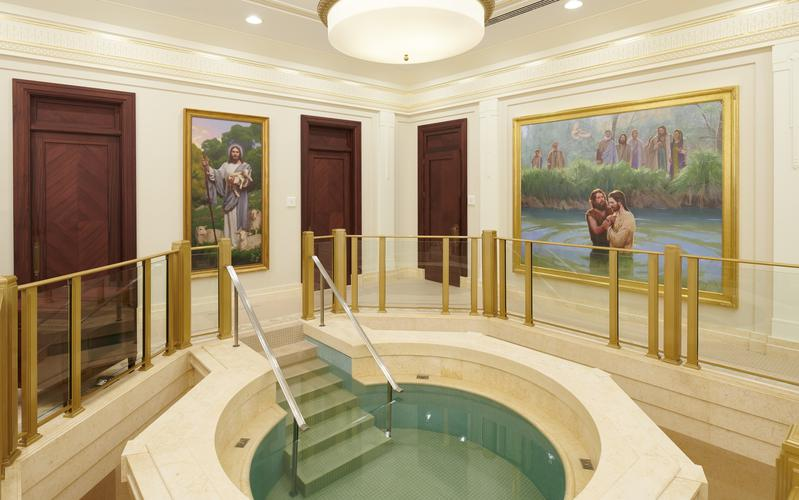
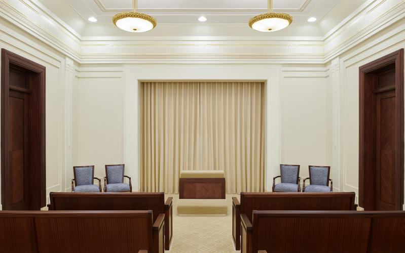

-

This majestic temple was built for the saints in and around Kwazulu natal.

Baptistry inside the Durban South Africa temple where the covenant of baptism is entered into on behalf of deceased ancestors.

The Endowment room of the Durban South Africa Temple.

The sealing room of the Durban South Africa Temple.
Wireframe Project
President Nelson celebrated his 99th birthday!! We wish him, everything of the very, very best, we also wish him good health and the Lord's choicest blessings upon him and his family. He recently addressed us during general conference and his talk was about how we can become better disciples of Christ by thinking celestial in everything that we do.He urged us to choose to live a virtuos life in a sexualized, politicized world builds faith. I bear my testimony that President Nelson is a Latter-day Prophet like Moses and Elijah.
Here is the link to his talk
Click on the link to visit this website.